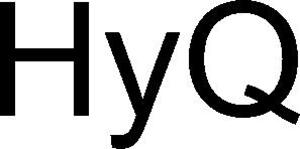

Trade Mark Journal No.2025/048 28 November 2025
WO0000001885517 (7,9,42)
Office of origin: Switzerland
Date of International Registration:13 May 2025
Date of designation in the UK:
13 May 2025

International priority date claimed: 25 November 2024
(Switzerland)
(825604)
- Class 7
- Generators; electricity production installations (generators); electric drives for machines and motors; high-voltage induction motors; electric power generation units.
- Class 9
- Apparatus for instruments used for controlling, directing, switching, converting, accumuling and storing electricity; uninterruptible power supply apparatus; high-frequency switching power supplies; high-voltage power supply apparatus; low-voltage power supply apparatus; current rectifiers; electric converters; electric switching cabinets; electric apparatus for controlling and regulating electric and electronic machines and apparatus; energy (electricity) storage apparatus; inverters (electricity); electric control apparatus for energy management; computer software for use with electricity supply apparatus, electrolysis systems and in the field of energy management and energy efficiency; uninterruptible power supplies (machines) for electrical energy production.
- Class 42
- Engineering; research and development services; technical checking and inspection; research and development for third parties in the field of electrical engineering, electronics, information technology and mechanical construction, as well as planning, consulting, engineering and technical inspection services in these fields; rental of electrotechnical, electronic and computer products and installations, namely apparatus and instruments for controlling electricity; Software as a Service (SaaS); computer Platform as a Service (PaaS); all the above-mentioned services offered for use with power supply apparatus, electrolysis systems, as well as in the fields of energy management and energy efficiency.
ABB Asea Brown Boveri Ltd
Representative: Walder Wyss AG, Seefeldstrasse 123,, Postfach, CH-8034 Zürich, SWITZERLAND